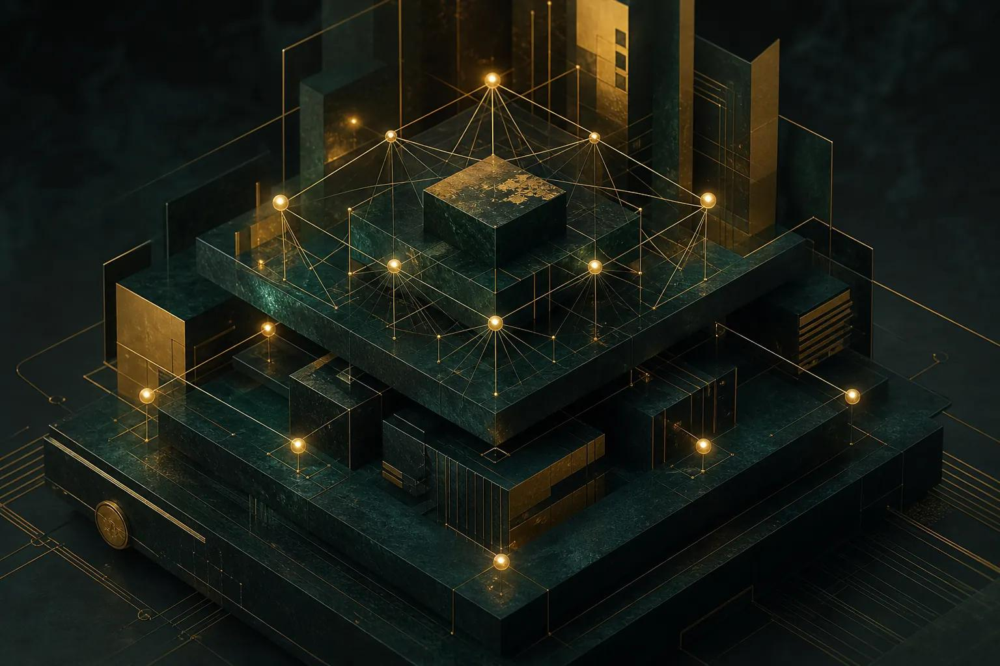

SHEIKHA GLOBAL RUNTIME PLATFORM
شيخة
من المعرفة إلى الصناعة،
ومن أرضنا إلى العالم.
THE SHEIKHA ECOSYSTEM
مسارات المنظومة
الرؤية والحوكمة
حضارة تنمو مع الإنسان والطبيعة
مرجعية الكتاب والسنة، وعمل قائم على الصدق والعدل والأمانة. الأحكام الشرعية والعقود والقرارات عالية الأثر تخضع لمراجعة بشرية مؤهلة، دون فتوى أو اعتماد آلي.
- النطاق
- الصناعة والتجارة وسلاسل الإمداد
- الهوية التشغيلية
- SHEIKHA UGIT-RP
- التنفيذ الخارجي
- غير مفعّل في هذه المساحة

PRODUCTS & SERVICES
المنتجات والخدمات
تعذر قراءة الكتالوج المحلي.
طلبات المراجعة في هذه الجلسة
مسودات غير مرسلة؛ تنتهي عند إغلاق الصفحة أو تحديثها.
SHEIKHA OPERATIONS
لوحة التشغيل
Foundry
نتيجة الاستدعاء
الدليل الكامل والمعاملات
سجل الاستدعاءات
VISUAL FOUNDRY · WATCH · GUARD
الإنتاج البصري والمتابعة
SHEIKHA MOTION / REVIEW 01
شيخة · الحركة والهوية
جارٍ قراءة سجل المرئيات
تعذر تحميل سجل المراجعة المحلي.
الصوت الأصلي محفوظ مع خفوت في الانتقال، ثم صمت أثناء دراسة الموجة. لم تُجرَ مراجعة استماع للمحتوى الصوتي.
سجل الإنتاج واللقطات المرجعية


MOTION & VISUAL IDENTITY
قراءة الحركة والبصريات
من المكان إلى المعرفة
يبدأ المشهد باتساع المجمع الساحلي، يقترب من المدخل والماء، ثم يعود إلى منظور أوسع. حركة هادئة تُبرز العمارة والعلامة، وتليها الموجة كدراسة تعليمية مستقلة.
هوية مترابطة
الزجاج الأخضر والزخرفة الذهبية يربطان الرؤيا المعمارية بالمختبر. الحجر الفاتح والماء الأزرق يوازنان المشهد، ويحضر السيان في الموجة كتمييز علمي.
حدود الدليل
المجمع تحريك فني وليس توثيقًا لمنشأة قائمة. الموجة على مجال اصطناعي؛ التحقق العددي يحتاج شيفرة المحلّل وشروط الحدود واختبارات الثبات والتقارب.
ARCHITECTURE REVIEW / 01
النواة والترابط
مراجعة التكوين الأخضر والذهبي: تصور معماري، لا مخطط دائرة إلكترونية.

ما يمكن تحويله إلى بنية
- النواة: تحقق موحّد من المدخلات والحدود.
- الطبقات: واجهة، بوابة محلية، SDK أو MCP، ومحركات المجال.
- العقد: وظائف محددة بعقود ومعرّفات واضحة.
- الروابط: طلبات موثقة بنتائج وبصمات محتوى.
- الحارس: رفض المدخلات غير المسموحة، وفصل المحاكاة عن التنفيذ.
ما لا يمكن التحقق منه كهربائيًا
- لا رموز مكونات أو أرقام أطراف أو قائمة مواد.
- لا جهود أو تيارات أو أرضي أو حماية أو عزل.
- لا شبكة توصيلات أو بروتوكولات أو حدود توقيت.
- لا محاكاة كهربائية أو نتائج قياسات أو اختبارات سلامة.
يلزم مخطط هندسي قابل للقراءة وملف توصيلات ومواصفات قبل أي اعتماد أو تصنيع إلكتروني.
مسار التشغيل المطبق
- واجهة الطلب
- تحقق النطاق والجلسة
- SDK / MCP
- محرك المجال
- دليل النتيجة
- مراجعة بشرية